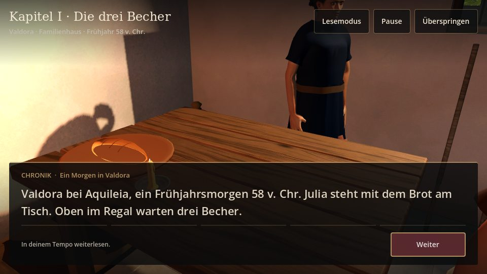
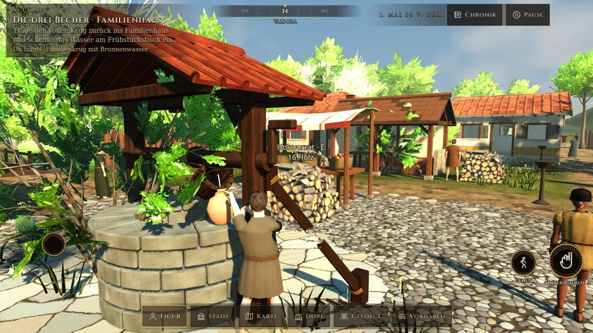
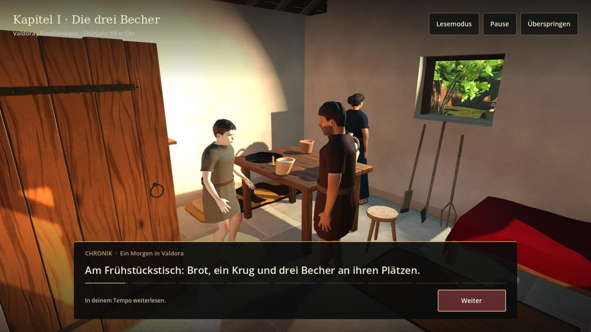

VALDORA · 58 V. CHR.REGIEBUCH / I–01

Nähe · Ein Gespräch ist noch keine Tat.
Julia deckt selbst und bittet um Wasser. Beim Frühstück zählt, ob der Junge ihrer Bitte wirklich nachgekommen ist.


DESIGNVORSCHLAGNOCH NICHT SPIELBAR
Die fehlgeleitete Lieferung. Ein Werkzeugkorb verbindet Haus, Stand und Schmiede. Wer ihn sucht, kann arbeiten, handeln oder Spuren lesen. Keine Klasse wird festgelegt; niemand darf denselben Korb zweimal ausliefern.
Wie daraus später eine größere Welt wird
- Wirtschaft
- Ein realer Bestand wechselt den Eigentümer. Die Werkstatt kann erst weiterarbeiten, wenn die Ware ankommt.
- Politik
- Später kann ein Rat um Versorgung bitten. Vertrauen folgt einer beobachteten Leistung, keinem Dialogknopf.
- Militär
- Ein erwachsener, berechtigter Charakter kann dieselbe Logik für Heeresversorgung nutzen. Das Kind erhält dadurch keine militärischen Rechte.